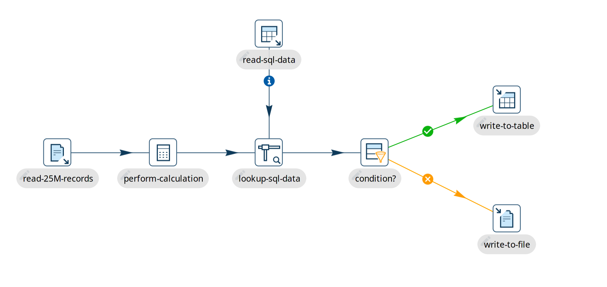

Pipelines
What Pipelines Actually Do
Pipelines are the data workers of Apache Hop. Where workflows orchestrate tasks and make decisions, pipelines do the heavy data processing: they read data from one or more sources, transform, enrich, and validate it in-flight, and write the processed records to one or more destination systems.
Pipelines are designed for high throughput and low latency:
-
Ingestion: Read structured and unstructured data from relational databases, cloud object storage (S3, GCS, Azure Blob), local or network files via the Virtual File System (VFS), message queues (Apache Kafka, JMS, AWS SQS), or REST APIs.
-
Transformation & Cleansing: Filter invalid rows, calculate values, standardize date and number formats, manipulate strings, parse JSON or XML, handle missing values, and execute business rules.
-
Lookups & Joins: Enrich streaming records by joining data streams or performing real-time lookups against database tables, in-memory caches, or static datasets.
-
Loading: Insert, update, or bulk load rows into relational databases, cloud data warehouses (Snowflake, BigQuery, Redshift), lakehouse tables (Delta Lake, Apache Iceberg), search indexes, or messaging topics.
Under the Hood: How a Pipeline Executes
Even though a pipeline diagram looks like a flowchart, it does not execute step-by-step. A pipeline is an active streaming dataflow network.
1. The Parallel Nature
When you run a pipeline, all transforms start at the exact same moment. Each transform operates as an independent worker running simultaneously alongside every other transform.
In a traditional batch script, step 1 must finish reading an entire million-row file before step 2 can start processing. In a Hop pipeline:
-
The input transform begins reading the first rows from your file.
-
It immediately pushes those rows down the hop to the next transform.
-
The downstream transforms begin filtering and calculating right away.
-
While the input transform is reading row 50,000, intermediate transforms are processing row 25,000, and the output transform is already writing row 10,000 to the database!
2. In-Memory Row Buffers
Data travels between transforms along hops. Behind every hop sits an in-memory row buffer (a queue with a default capacity of 10,000 rows, configurable in the pipeline properties dialog).
-
An upstream transform pushes rows into the buffer.
-
The downstream transform pulls rows out of the buffer to do its work.
-
Data streams directly through memory from transform to transform, avoiding slow intermediate temporary files on disk.
3. Automatic Back-Pressure
What happens when an output database or web service is slower than a fast file reader? Hop handles this automatically with back-pressure:
-
If the downstream transform cannot keep up, the row buffer between the two transforms fills up to its maximum capacity (e.g. 10,000 rows).
-
Once the buffer is full, the upstream transform automatically pauses reading until the downstream transform consumes rows and makes room.
-
This pause naturally ripples backward through the entire pipeline all the way to the initial source transform.
-
When the downstream transform catches up, the upstream transform resumes processing automatically.
Thanks to back-pressure, your pipelines automatically adapt to varying speeds and the memory held between transforms stays bounded, no matter how many millions or billions of rows you process. Note that back-pressure governs the row buffers on the hops only. Transforms that have to collect a whole set before they can emit a row — Stream Lookup, Memory Group By and similar — hold that set in memory and still need to fit in the heap.
4. Scaling and Partitioning
When a single transform becomes a performance bottleneck (such as a complex calculation or slow API call), Hop provides built-in tools to scale:
-
Multiple Copies: You can tell the local Hop pipeline engine to run multiple parallel copies of any transform (e.g., 4 or 8 copies). Hop distributes rows across these copies to saturate available CPU cores (
Specify copies). The copy count is not a thread count on Beam (including Flink) or native Spark. -
Data Partitioning: Partition data streams across worker threads of the local Hop pipeline engine according to partition rules (
Partitioning). A partition schema is not applied on Beam or native Spark. -
Row-Level Error Handling: Route rejected or malformed rows into an alternate error stream without stopping the pipeline (
Error Handling).
Pipeline Execution Engines
In Apache Hop, your pipeline design (.hpl) contains pure metadata and does not hardcode where or how it runs.
You choose an engine via a Pipeline Run Configuration.
Hop provides several purpose-built pipeline engines:
| Engine | Best For | How It Operates |
|---|---|---|
Workstations, local testing, and standard single-server production jobs. |
Runs locally in the Hop JVM, using multi-threaded in-memory streaming with row buffers. |
|
Offloading jobs to dedicated servers or cloud instances. |
Sends pipeline metadata to a remote Hop Server over HTTP, streaming logs and metrics back to the client. |
|
Spreading separate pipeline runs over a group of servers. |
Assigns each pipeline to one server from a configured group, using an even-load or pack algorithm, and retries on another server when the chosen one is at capacity. |
|
Massive batch processing and low-latency continuous streaming at enterprise scale. |
Translates the pipeline into an Apache Flink streaming or batch application running on a Flink cluster. |
|
Distributed batch data processing on existing Apache Spark clusters. |
Compiles the pipeline into an Apache Beam job executed on an Apache Spark cluster. |
|
Serverless, auto-scaling big data pipelines on Google Cloud. |
Deploys the pipeline to Google Cloud Dataflow, with automatic resource provisioning and horizontal scaling. |
|
Testing Beam pipelines locally before deploying to Flink, Spark, or Dataflow. |
Executes Apache Beam pipelines locally on your machine for quick verification. |
|
Lakehouse architectures, Delta Lake, and Apache Iceberg tables. |
Executes natively on Apache Spark using Spark SQL and DataFrames without requiring Beam. |
|
Micro-batches, low-latency API handling, and deterministic debugging. |
Executes transforms sequentially on a single thread, passing batches of rows one transform at a time. Ideal for embedded use and sub-pipelines. |
Popular Real-World Scenarios
Here is how pipelines are commonly used in modern data architectures:
1. High-Throughput Batch Ingestion & Data Warehousing
Pipelines extract millions of records from operational databases (ERP, CRM) or files (CSV, Parquet, Excel) stored on S3 or Azure Blob storage. The pipeline cleanses fields, checks referential integrity with cached lookups, and bulk loads data directly into analytical databases like Snowflake, BigQuery, PostgreSQL, or Redshift.
2. Continuous Real-Time Streaming
A pipeline listens 24/7 to an Apache Kafka topic using the Kafka Consumer transform. As events arrive, the pipeline deserializes JSON or Avro payloads, enriches them with static metadata, computes rolling metrics, and streams outputs directly to monitoring dashboards or operational stores.
3. Interactive Workstation Development & Live Preview
While building data pipelines in the Hop GUI, data engineers do not need to wait for full batch runs to see if their logic works. By right-clicking any transform and selecting Preview & debug output, you can inspect real data rows flowing through that transform immediately. See Run, Preview and Debug a Pipeline.
4. Automated CI/CD Regression Testing
Pipelines can be linked with golden datasets using the Pipeline Unit Testing framework.
In continuous integration (CI) environments (e.g. GitHub Actions, GitLab CI), tests run automatically headlessly with hop-run to verify that data transformations produce expected results before code is merged or deployed.
5. Embedded in Custom Applications
Using Hop’s runtime libraries, developers can embed pipelines directly inside custom Java applications. The host application dynamically configures variables, launches the pipeline, and consumes output data streams without launching the GUI.
6. Python Data Science with PyHop
Data scientists can use the PyHop library to control Hop from Python scripts. Pipelines can be triggered programmatically, and high-volume data streams can be passed directly into pandas or Polars DataFrames using Apache Arrow in-memory IPC without touching disk.
Example Pipeline Walk-Through
The example below shows a typical real-world pipeline design:

When this pipeline runs:
-
All 7 transforms start simultaneously.
-
The
read-25M-recordstransform begins reading from a file and pushes rows downstream. -
The
perform-calculationstransform processes those incoming rows concurrently. -
The
lookup-sql-datatransform enriches the rows with reference data retrieved fromread-sql-datausing a Stream Lookup. -
The Filter Rows transform splits rows based on a business condition: matching rows go to
write-to-table, while non-matching rows go towrite-to-file. -
Rows flow continuously through the buffers until all records are processed.
Next Steps
To dive deeper into building and managing pipelines, explore:
-
Pipeline Editor — Learn your way around the pipeline visual designer.
-
Create a Pipeline — Step-by-step instructions for creating and saving pipelines.
-
Pipeline Sources — The transforms that can start a pipeline.
-
Transforms — Hundreds of transforms, each with a page of its own under Pipelines › Transforms in the navigation.
-
Run, Preview and Debug a Pipeline — Techniques for inspecting live rows in-flight.
-
Pipeline Metrics — Understand row counters, speeds, and buffer metrics.
-
Metadata Injection — Generate dynamic, metadata-driven pipelines at runtime.
-
Getting Started with Apache Beam — Scale out pipelines on Flink, Spark, and Google Cloud Dataflow.
-
Getting Started with Native Spark — Run natively on Spark clusters and lakehouse tables.